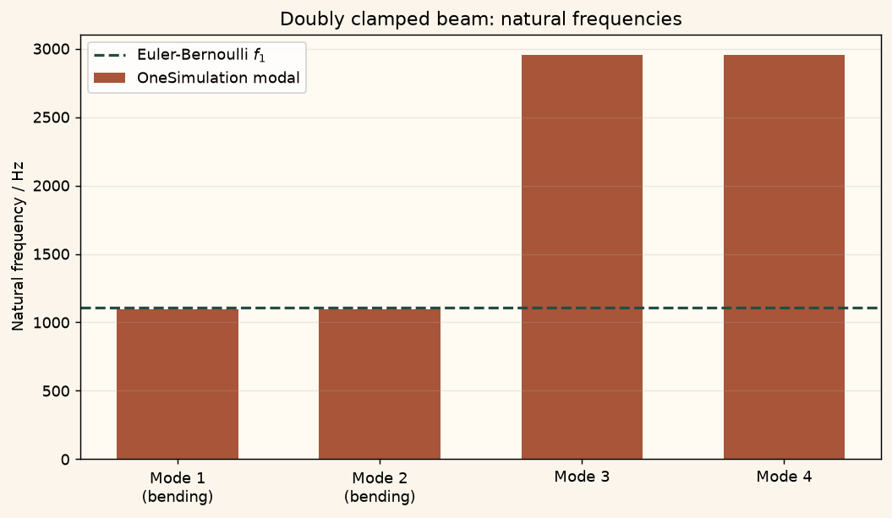

Docs › Examples › Natural frequency of a clamped-clamped beam
Solid mechanics · 3D
Natural frequency of a clamped-clamped beam
The fundamental frequency of a doubly clamped beam, graded against Euler-Bernoulli.

What it computes
OneSimulation runs a modal analysis on the linear-elastic beam clamped at both ends.
What it checks
The fundamental frequency matches f_1=(beta_1^2/2pi) sqrt(E I/(rho A L^4)), beta_1=4.730, within about 1.1 %.
The notebook
The complete notebook, cell by cell. Run it to produce the figures and the comparison printout.
A prismatic beam (length \(L\), square cross-section \(b\times h\)) is fully clamped on both end faces and traction-free on every other face. OneSimulation assembles the 3D linear-elastic stiffness and mass operators (Q2 hexahedra) and solves the generalised eigenproblem \(K\boldsymbol\phi=\omega^2 M\boldsymbol\phi\) on the free degrees of freedom to obtain the natural modes and frequencies.
Reference. Euler-Bernoulli beam theory gives the bending natural frequencies
with \(\beta_1=4.730041\) for the first clamped-clamped mode (the first root of \(\cos\beta\cosh\beta=1\)). Beam theory neglects shear deformation and rotary inertia and is therefore an approximate target for a three-dimensional solid of finite slenderness; the deviation grows for stubby beams.
from importlib.metadata import version
from math import pi, sqrt
import numpy as np
import matplotlib.pyplot as plt
from onesim.cad.d3 import Box
from onesim.materials import IsotropicSolid
from onesim.meshing import StructuredHexahedralMesher
from onesim.numerics import Numerics
from onesim.numerics.fem import FiniteElement, Lagrange
from onesim.numerics.linear import SparseDirect
from onesim.physics.solid_mechanics import FixedDisplacement, LinearElasticity, TractionFree, structural_modes
from onesim.simulation import Problem, Simulation
print("OneSimulation:", version("onesimulation"))Parameters and model
A slender beam (\(L/h=20\)) keeps the Euler-Bernoulli target accurate even for the relatively high wavenumber of the clamped-clamped fundamental.
length, side = 0.240, 0.012 # m, square cross-section
E, nu, density = 210e9, 0.30, 7850.0 # Pa, -, kg/m^3 (structural steel)
inertia = side * side**3 / 12.0 # I = b h^3 / 12, square section
area = side * side # A = b h
beta_1 = 4.730041 # first clamped-clamped eigenvalue beta_1 * L
frequency_reference = beta_1**2 / (2.0 * pi) * sqrt(E * inertia / (density * area * length**4))
geometry = Box(length=length, width=side, height=side)
material = IsotropicSolid(
density=density, specific_heat_capacity=460.0, thermal_conductivity=50.0,
youngs_modulus=E, poisson_ratio=nu, thermal_expansion_coefficient=12e-6,
)
model = LinearElasticity(domain=geometry.volume, material=material)
problem = Problem(
name="Doubly clamped beam natural modes",
geometry=geometry, physics=(model,),
boundary_conditions=(
# Clamped on both end faces, traction-free everywhere else.
FixedDisplacement(boundary=geometry.boundaries.x_min, physics=model, value=(0.0, 0.0, 0.0)),
FixedDisplacement(boundary=geometry.boundaries.x_max, physics=model, value=(0.0, 0.0, 0.0)),
TractionFree(boundary=geometry.boundaries.all - geometry.boundaries.x_min - geometry.boundaries.x_max,
physics=model),
),
)
mesh = StructuredHexahedralMesher(cells=(48, 3, 3)).generate(geometry)
print("Mesh:", mesh.cell_count, "hexahedra")
result = Simulation(
problem=problem, mesh=mesh,
numerics=Numerics(spatial=FiniteElement(element=Lagrange(order=2)), linear_solver=SparseDirect()),
).solve_stationary()Modal analysis and comparison with beam theory
The square cross-section makes bending about the two transverse axes degenerate, so the first two computed frequencies form one bending pair. The fundamental is the lowest of them.
modes = structural_modes(result, model, mode_count=4)
assert modes.passed, "The modal solver did not converge."
fundamental = modes.frequencies[0]
rel_error = abs(fundamental - frequency_reference) / frequency_reference
print(f"Fundamental frequency: modal {fundamental:.2f} Hz, Euler-Bernoulli {frequency_reference:.2f} Hz")
print(f"relative deviation: {100*rel_error:.2f} % (3D solid is slightly stiffer than beam theory)")
print("First four frequencies / Hz:", [round(f, 2) for f in modes.frequencies])
assert tuple(sorted(modes.frequencies)) == modes.frequencies, "Frequencies must be ordered."
assert modes.frequencies[1] == modes.frequencies[0] or abs(modes.frequencies[1] - modes.frequencies[0]) / fundamental < 1e-3, \
"The square section gives a degenerate first bending pair."
assert rel_error < 0.03, "Deviation larger than the example tolerance (3 % against Euler-Bernoulli)."Figure
cream = "#fbf5eb"
labels = ["Mode 1\n(bending)", "Mode 2\n(bending)", "Mode 3", "Mode 4"]
fig, ax = plt.subplots(figsize=(8, 4.6), constrained_layout=True)
fig.patch.set_facecolor(cream); ax.set_facecolor("#fffaf2"); ax.grid(alpha=0.25, axis="y")
ax.bar(range(4), modes.frequencies, color="#A85539", width=0.6, label="OneSimulation modal")
ax.axhline(frequency_reference, color="#214D43", lw=1.8, ls="--", label="Euler-Bernoulli $f_1$")
ax.set(xticks=range(4), xticklabels=labels, ylabel="Natural frequency / Hz",
title="Doubly clamped beam: natural frequencies")
ax.legend()
plt.show()Going further
Refine the mesh and watch the computed fundamental frequency descend towards the Euler-Bernoulli value from above, as the discrete model becomes less stiff. Reduce the slenderness L/h; for stubby beams shear and rotary inertia grow and the clamped-clamped fundamental drops increasingly below the beam-theory estimate.